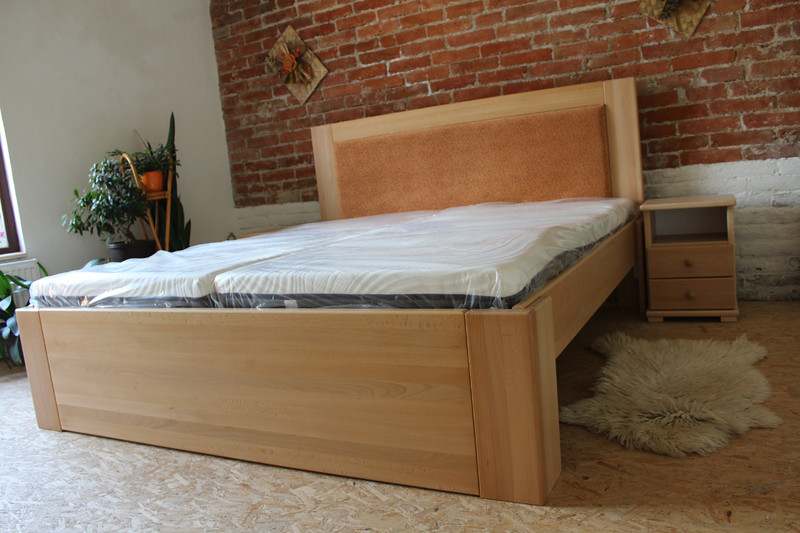
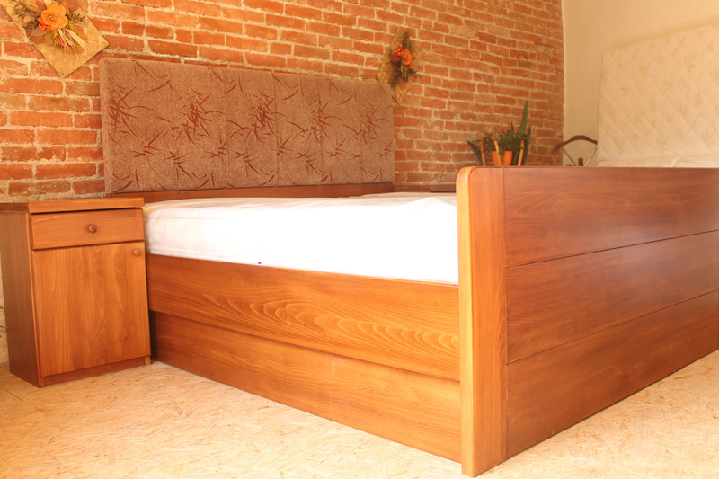
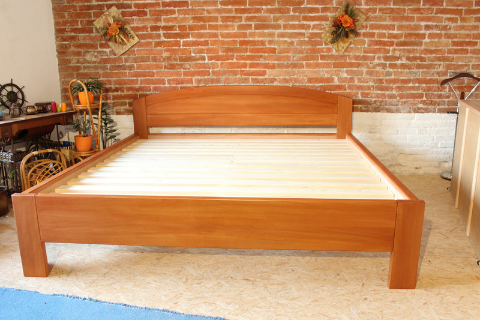
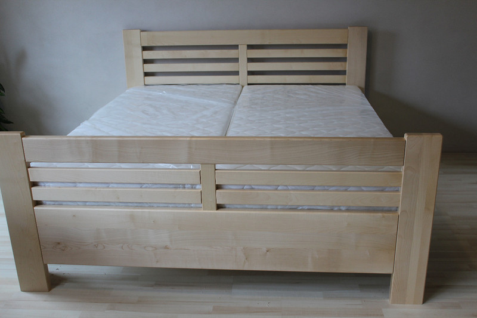
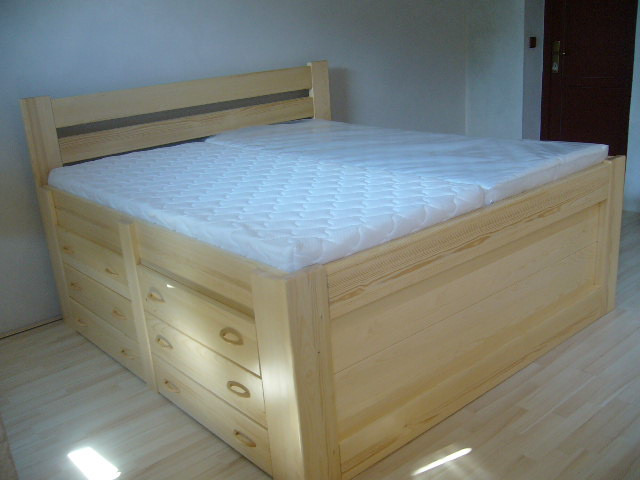
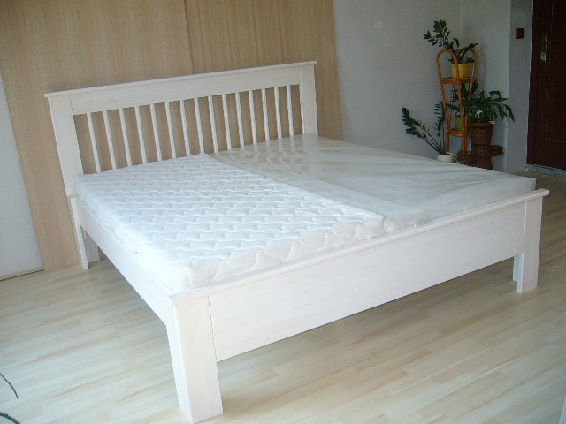
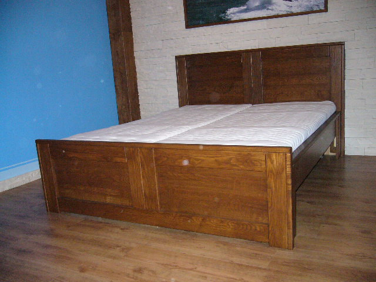
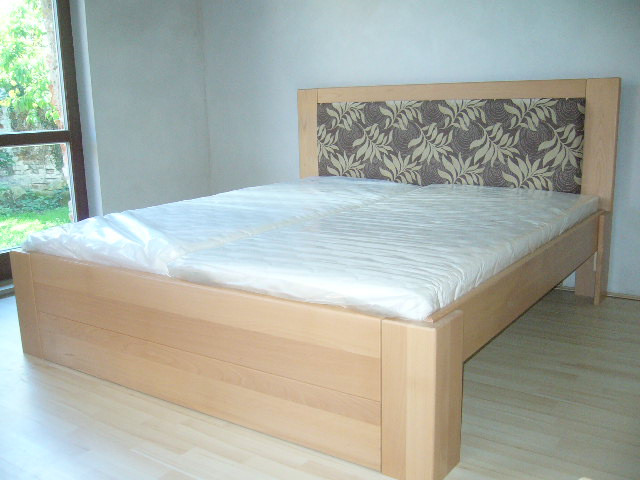
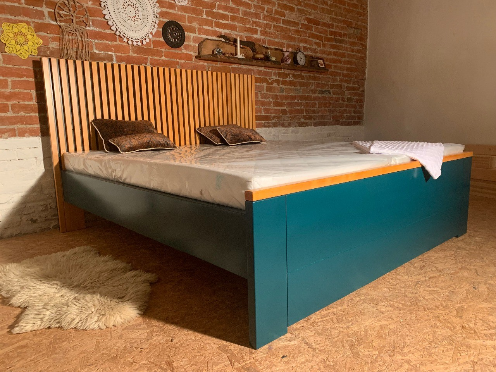

Postele na míru: atypické, nadrozměrné a čalouněné
Nestandardní šířka, délka, čalouněné čelo nebo kontinentální typ. Vyrobíme podle nákresu, fotky nebo vašich rozměrů, obvykle do 4 týdnů.

Dvoulůžko Anthonie s čalouněným čelem
Vysokozátěžové dvoulůžko z masivního buku s čalouněným čelem.

Dvoulůžko Benedikta
Nadčasové robustní dvoulůžko z masivního smrku pro náročné s tloušťkou materiálu 40mm a 28mm.

Dubové dvoulůžko Michaela
Luxusní robustní dvoulůžko z masivního dubu pro náročné s tloušťkou materiálu 42mm.

Dvoulůžko kontinentálního typu
Luxusní bukové dvoulůžko kontinentálního typu pro náročné s vysokým čalouněným čelem a vestavným úložným prostorem.

Dvoulůžko s čalouněným čelem Patricia
Robustní bukové dvoulůžko s čalouněným čelem v provensálském stylu.

Luxusní dvoulůžko s čalouněným vysokým čelem Elizabeth
Honosné luxusní dvoulůžko pro náročné s vysokým čalouněným čelem a vestavným úložným prostorem kontinentálního typu.

Nadměrné dvou a půl lůžko 220x200cm Adriana
Dvou a půl lůžko z bukového masivu v provedení moření Bernstein - za jakékoli moření příplatek 1 000 Kč.

Nadrozměrné trojlůžko Magda 240x200cm
Potřebujete větší prostor, spí s vámi děti a chcete se pohodlně vyspát všichni?

Dvoulůžko Nora z javoru
Luxusní dvoulůžko pro náročné z masivního bílého javoru.
Zobrazit dalších 4 modelySkrýt dalších 4

Vysoká manželská postel
Robustní dvoulůžko s výškou ložné plochy 85cm k povrchu matrace.

Bílé dvoulůžko Anita
Luxusní dvoulůžko v provensálském stylu pro romantické snění v materiálu masiv smrk tl.28mm v moření bílá lazura.

Dvoulůžko z jasanu Afrodita
Stylové dvoulůžko z masivního jasanu v provedení moření ořech světlý.

Dvoulůžko Tamara s čalouněným čelem
Luxusní dvoulůžko pro náročné z masivního buku s čalouněným čelem.
Jak vybrat
Co všechno uděláme jinak
Šířku, délku, výšku čela a ložné plochy, čalouněné čelo, kontinentální typ nebo provensálský styl. Pokud postel nejde koupit, uděláme ji.
Jak to probíhá
Pošlete rozměry, nákres nebo fotku. Připravíme písemnou nabídku s materiálem, cenou a termínem.

Časté dotazy
Jak dlouho trvá výroba na míru?
Obvykle do 4 týdnů od potvrzení objednávky.
Vyrobíte postel podle fotky?
Ano, vyrábíme i podle nákresu nebo fotky od zákazníka.
Chcete jiný rozměr nebo provedení?
Napište nebo zavolejte. Vyrobíme podle vašich rozměrů, nákresu nebo fotky.